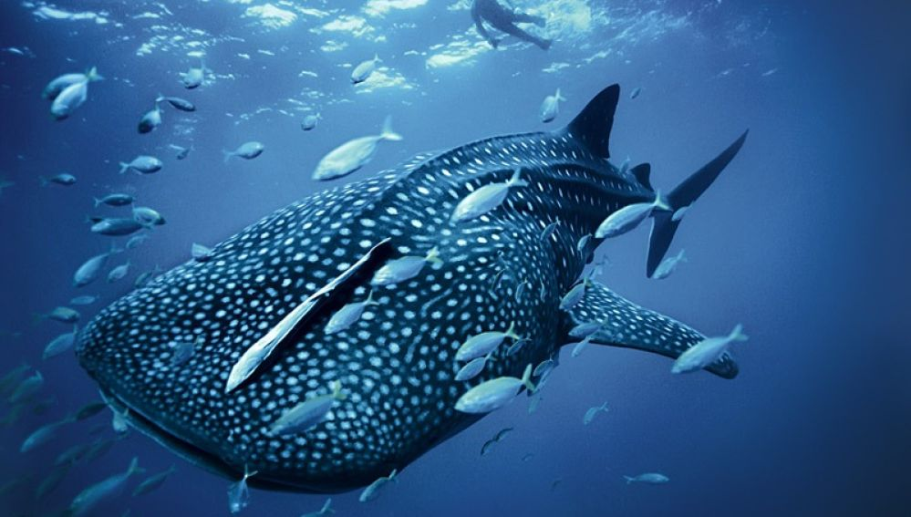

Reducir plásticos
Evitar bolsas y envases descartables hace que menos residuos terminen en el mar.
VER MÁS ☰
☰
Recibí información y acciones simples para ayudar a conservar la vida submarina.
PROTEGER
EL MAR
La contaminación y la pesca excesiva están dañando ecosistemas marinos esenciales para la vida.
Ver acciones
Cuanto más descendemos, más entendemos lo importante que es cuidar este ecosistema.
Los océanos producen más de la mitad del oxígeno del planeta.

Evitar bolsas y envases descartables hace que menos residuos terminen en el mar.
VER MÁS
No dejar basura y participar en limpiezas costeras protege a las especies acuáticas.
VER MÁS
Elegir productos del mar de origen sostenible ayuda a cuidar los ecosistemas.
VER MÁS
Los animales marinos necesitan hábitats sanos para sobrevivir.
VER MÁSMuchas especies marinas pierden sus hábitats debido a la contaminación y al cambio climático.
Compartir información y educar a otros puede generar conciencia y cambios reales.